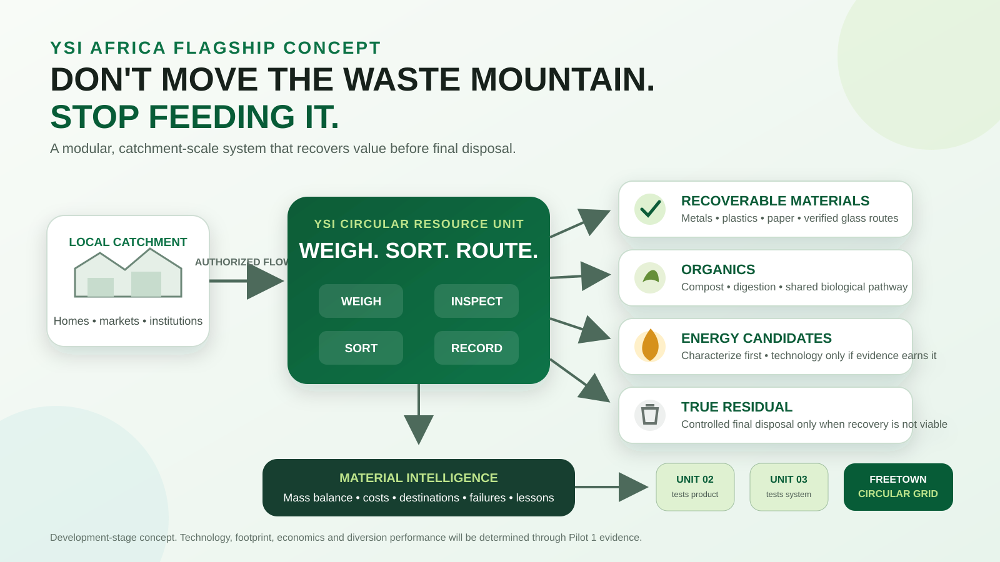

01
Receive & Measure
Authorized material enters, is weighed, identified, inspected and recorded.
Development-stage flagship project
YSI Africa is developing a modular, catchment-scale circular infrastructure model that brings recovery closer to where waste is produced, measures what happens to every material, and sends only the true residual to final disposal.
Unit 01 tests the operating concept. Unit 02 tests the product. Unit 03 tests the system. The network tests the vision.

Why this matters
Freetown already uses decentralized transfer infrastructure and approved collection providers. YSI's question is what happens next: how much material can be recovered before it ever needs long-distance disposal?
The goal is not to replace FCC or existing operators. It is to test a lighter infrastructure model that can work with them, generate better material data, reduce avoidable transport and progressively improve recovery.
The operating model
Every Circular Resource Unit starts with the same discipline. The exact processing modules depend on the catchment and the evidence.
Authorized material enters, is weighed, identified, inspected and recorded.
Materials, organics, hazardous items, energy candidates and true residuals are separated.
Each stream goes to the safest and most useful local or shared pathway.
Mass balance, costs, failures and outcomes become the specification for the next unit.
The design principle
Receiving, weighing, inspection, basic sorting, community interface, material aggregation and data collection.
Specialist recycling, hazardous treatment, advanced RDF conditioning, thermal treatment, laboratory work and final engineered disposal.
Pilot 1
YSI Circular Systems Lab — Unit 01 is designed to discover what a mature Circular Resource Unit should contain.
Track every kilogram from intake to recovery, organics, special material, energy candidate or final residue.
Measure the full cost of collection, sorting, storage, routing, maintenance and disposal, plus any value recovered.
Energy, organics and processing technologies advance only if feedstock, safety, economics, operability and regulation support them.
The replication thesis
Unit 01 tests the operating concept. Unit 02 is built from the first standard and tests whether the system can be replicated. Unit 03 tests whether the standard holds without constant reinvention.
If that works, multiple units can share buyers, maintenance, specialist infrastructure and common performance data to form the Freetown Circular Grid.
What YSI is testing
Project status
YSI is not claiming a proven cost advantage, zero landfill, a self-powered hub or a proven scalable technology. The architecture is set; Pilot 1 will determine the engineering, economics and real recovery performance.